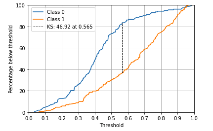
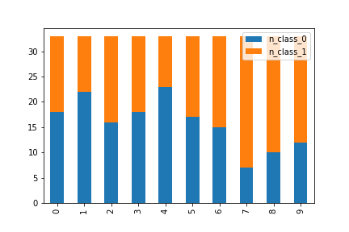
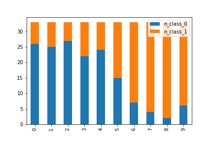
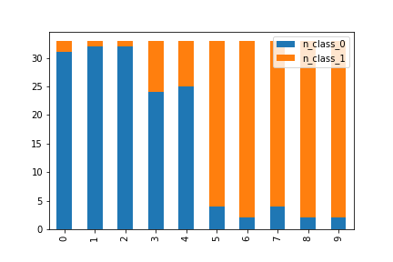

KS
Contents
KS#
Kolmogorov-Smirnov metric (ks metric) is derived from K-S test. K-S test measures the distance between two plotted cumulative distribution functions (CDF).
To use it as a metric for classification problem we see the distance of plotted CDF of target and non-target. It can be also defined as the maximum distance between TNR and FNR. 🔗
The model that produces the greatest amount of separability between target and non-target distribution would be considered the better model.

Why KS?#
Scale-invariant. It measures how well predictions are ranked, rather than their absolute values.
Threshold-invariant. It measures the quality of the model’s predictions irrespective of what classification threshold is chosen.
Although KS is a single metric. KS table / Gains Table can be used to take different actions for different bins.
Calculating KS#
Note
The following steps can be also done with pandas
# sample dataset and sample model
import numpy as np
import pandas as pd
from matplotlib import pyplot as plt
from sklearn.datasets import make_classification
from sklearn.linear_model import LogisticRegression
from sklearn.model_selection import train_test_split
# make sample dataset
X, y = make_classification(
n_samples=1000, class_sep=0.3, random_state=0
) # 1000 samples with 20 features
# split train-test
X_train, X_test, y_train, y_test = train_test_split(
X, y, test_size=0.33, random_state=42
)
# simple Logistic Model
model = LogisticRegression(random_state=23)
model.fit(X_train, y_train)
# predictions
y_train_pred = model.predict_proba(X_train)[:, 1]
y_test_pred = model.predict_proba(X_test)[:, 1]
print(
X_train.shape,
y_train.shape,
y_train_pred.shape,
X_test.shape,
y_test.shape,
y_test_pred.shape,
)
(670, 20) (670,) (670,) (330, 20) (330,) (330,)
Consider the following example, y_test represents true target values, here as 1s and 0s. and y_test_pred as prediction probabilities.
y_test[:5], y_test_pred[:5]
(array([0, 0, 1, 0, 1]),
array([0.3143867 , 0.13123316, 0.15998113, 0.35006658, 0.83034574]))
1. 2D array with y_true and y_pred#
ks_arr = np.dstack((y_test, y_test_pred))[0] # dstack returns a 3D array with len(z-axis)=1
ks_arr[:5] # view array
array([[0. , 0.3143867 ],
[0. , 0.13123316],
[1. , 0.15998113],
[0. , 0.35006658],
[1. , 0.83034574]])
2. sort the array with y_pred. why stable?#
ks_arr = ks_arr[np.argsort(ks_arr[:, 1], kind="stable")]
ks_arr[:5]
array([[0. , 0.0355004 ],
[0. , 0.04975776],
[0. , 0.05752943],
[1. , 0.06790324],
[0. , 0.07714446]])
3. get total counts of positives and negatives#
# np.unique(y_test, return_counts=True) -> (array([0, 1]), array([158, 172]))
y_true_counts = np.unique(y_test, return_counts=True)[1]
N = y_true_counts[0]
P = y_true_counts[1]
print(N, P)
158 172
4. cumilative rates - cumilative sum by counts#
cs_N = ((1 - ks_arr[:, 0]).cumsum() / N) * 100 # tnr
cs_P = ((ks_arr[:, 0]).cumsum() / P) * 100 # fnr
cs_N[:5], cs_P[:5]
(array([0.63291139, 1.26582278, 1.89873418, 1.89873418, 2.53164557]),
array([0. , 0. , 0. , 0.58139535, 0.58139535]))
# plot cs_N and cs_P
fig, ax = plt.subplots(1, 1)
ax.plot(ks_arr[:, 1], cs_N) # x-axis as y_pred
ax.plot(ks_arr[:, 1], cs_P)
plt.show()
5. cumilative difference#
cs_diff = np.abs(cs_N - cs_P)
cs_diff[:5]
array([0.63291139, 1.26582278, 1.89873418, 1.31733883, 1.95025022])
ks = cs_diff.max()
ks
46.916396820724174
Plotting KS#
fig, ax = plt.subplots(1, 1)
# plot cumilative percent
ax.plot(ks_arr[:, 1], cs_N, label="Class 0")
ax.plot(ks_arr[:, 1], cs_P, label="Class 1")
# plot max seperation
ks_threshold = ks_arr[cs_diff.argmax(), 1]
ax.axvline(
x=ks_threshold,
ymin=sorted([cs_P[cs_diff.argmax()] / 100, cs_N[cs_diff.argmax()] / 100])[0],
ymax=sorted([cs_P[cs_diff.argmax()] / 100, cs_N[cs_diff.argmax()] / 100])[1],
c="black",
linewidth=1,
linestyle="--",
label=f"KS: {ks.round(2)} at {ks_threshold.round(3)}",
)
# plot settings
ax.set_xlim([0, 1])
ax.set_ylim([0, 100])
ax.set_xlabel("Threshold")
ax.set_ylabel("Percentage below threshold")
ax.set_xticks(np.linspace(0, 1, 11))
ax.grid()
ax.legend()
plt.show()
AUC and KS#
There is a strong relationship between AUC and KS.
from sklearn.metrics import roc_curve
fpr, tpr, thresholds = roc_curve(y_test, y_test_pred)
(((tpr-fpr).max())*100).round(2), ks.round(2)
(46.92, 46.92)
Explore this Streamlit App to understand more about the relationship between them. Also refer to Youden’s J statistic.
KS Table#
1. bin#
# dataframe with y_true and y_pred
df = pd.DataFrame()
df["score"] = y_test_pred
# one hot encoding the dependent variable
df["class_n"] = 1 - y_test
df["class_p"] = y_test
# decile bins of prediction scores after ordering them
df["bin"] = pd.qcut(df.score.rank(method="first"), 10, labels=list(range(0, 10, 1)))
df.head()
| score | class_n | class_p | bin | |
|---|---|---|---|---|
| 0 | 0.314387 | 1 | 0 | 1 |
| 1 | 0.131233 | 1 | 0 | 0 |
| 2 | 0.159981 | 0 | 1 | 0 |
| 3 | 0.350067 | 1 | 0 | 2 |
| 4 | 0.830346 | 0 | 1 | 8 |
2. target distribution#
grouped = df.groupby("bin", as_index=False)
ks_table = pd.DataFrame()
ks_table["min_score"] = grouped.min().score
ks_table["max_score"] = grouped.max().score
ks_table["n_class_n"] = grouped.sum().class_n
ks_table["n_class_p"] = grouped.sum().class_p
ks_table["n_total"] = ks_table.n_class_n + ks_table.n_class_p
ks_table
| min_score | max_score | n_class_n | n_class_p | n_total | |
|---|---|---|---|---|---|
| 0 | 0.035500 | 0.224967 | 21 | 12 | 33 |
| 1 | 0.226262 | 0.327676 | 27 | 6 | 33 |
| 2 | 0.328646 | 0.377685 | 19 | 14 | 33 |
| 3 | 0.381554 | 0.437930 | 25 | 8 | 33 |
| 4 | 0.442221 | 0.491976 | 23 | 10 | 33 |
| 5 | 0.495512 | 0.575724 | 17 | 16 | 33 |
| 6 | 0.577944 | 0.671211 | 9 | 24 | 33 |
| 7 | 0.671344 | 0.757899 | 6 | 27 | 33 |
| 8 | 0.765076 | 0.874251 | 4 | 29 | 33 |
| 9 | 0.874542 | 0.988560 | 7 | 26 | 33 |
ks_table[
[
"n_class_n",
"n_class_p",
]
].plot.bar(stacked=True)
<AxesSubplot:>

The graph above show the difference in classification for each decicles.
Note
This difference varies depending on performance.
KS 25 |
KS 50 |
KS 75 |
|---|---|---|
 |
 |
 |
3. cumulative difference#
count_class_n = df.class_n.sum()
count_class_p = df.class_p.sum()
ks_table["%_class_n"] = (ks_table.n_class_n / count_class_n) * 100
ks_table["%_class_p"] = (ks_table.n_class_p / count_class_p) * 100
ks_table["cs_class_n"] = (ks_table.n_class_n / count_class_n).cumsum() * 100
ks_table["cs_class_p"] = (ks_table.n_class_p / count_class_p).cumsum() * 100
ks_table["cs_diff"] = np.abs(ks_table["cs_class_n"] - ks_table["cs_class_p"])
ks_table.style.format(
"{:.1f}%", subset=["%_class_n", "%_class_p", "cs_class_n", "cs_class_p", "cs_diff"]
)
| min_score | max_score | n_class_n | n_class_p | n_total | %_class_n | %_class_p | cs_class_n | cs_class_p | cs_diff | |
|---|---|---|---|---|---|---|---|---|---|---|
| 0 | 0.035500 | 0.224967 | 21 | 12 | 33 | 13.3% | 7.0% | 13.3% | 7.0% | 6.3% |
| 1 | 0.226262 | 0.327676 | 27 | 6 | 33 | 17.1% | 3.5% | 30.4% | 10.5% | 19.9% |
| 2 | 0.328646 | 0.377685 | 19 | 14 | 33 | 12.0% | 8.1% | 42.4% | 18.6% | 23.8% |
| 3 | 0.381554 | 0.437930 | 25 | 8 | 33 | 15.8% | 4.7% | 58.2% | 23.3% | 35.0% |
| 4 | 0.442221 | 0.491976 | 23 | 10 | 33 | 14.6% | 5.8% | 72.8% | 29.1% | 43.7% |
| 5 | 0.495512 | 0.575724 | 17 | 16 | 33 | 10.8% | 9.3% | 83.5% | 38.4% | 45.2% |
| 6 | 0.577944 | 0.671211 | 9 | 24 | 33 | 5.7% | 14.0% | 89.2% | 52.3% | 36.9% |
| 7 | 0.671344 | 0.757899 | 6 | 27 | 33 | 3.8% | 15.7% | 93.0% | 68.0% | 25.0% |
| 8 | 0.765076 | 0.874251 | 4 | 29 | 33 | 2.5% | 16.9% | 95.6% | 84.9% | 10.7% |
| 9 | 0.874542 | 0.988560 | 7 | 26 | 33 | 4.4% | 15.1% | 100.0% | 100.0% | 0.0% |
%_class_n for 0th bin is 21 / total number of class_n.
cs_class_n is the same but cumulatively summed.
cs_diff is the difference between cs_class_n and cs_class_p
4. KS#
KS is the max difference between cumulatively summed rate of target and cumulatively summed non-target. i.e. maximum value of cs_diff
ks = ks_table["cs_diff"].max()
print(f"KS = {round(ks,2)}")
KS = 45.17
Plot Binned KS#
fig, ax = plt.subplots(1, 1)
ax.plot(ks_table["cs_class_n"], label="Class 0")
ax.plot(ks_table["cs_class_p"], label="Class 1")
ks_tier = ks_table["cs_diff"].idxmax()
ax.axvline(
x=ks_tier,
ymin=ks_table.loc[ks_tier, "cs_class_n"] / 100,
ymax=ks_table.loc[ks_tier, "cs_class_p"] / 100,
c="black",
linewidth=1,
linestyle="--",
label=f"KS: {ks_table['cs_diff'].max().round(2)} at tier:{ks_tier}",
)
ax.set_xlim([0, 9])
ax.set_ylim([0, 100])
ax.set_xlabel("Tiers")
ax.set_ylabel("Cumilative Percentage")
ax.set_xticks(ks_table.index)
ax.grid()
ax.legend()
plt.show()

Note
Binned KS are useful when you intent to have different actions for differnt bins. For example in the case of credit scoring you might give different APRs to customers falling in different bins.